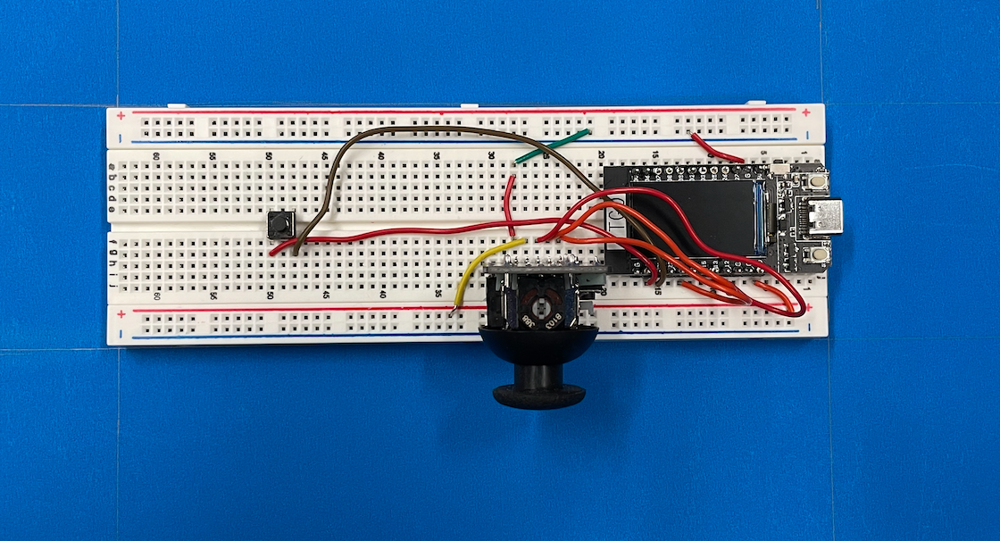

Interactive device
Date: March 28th 2023
What if we could make it snow whenever we want?Well, we are not quite there, but we can still control the snow falling on the screen with this interactive device:
This project, named "Snow maker", combines an ESP32 with a joystick and a button that communicates with the computer through a
cable c. Moving the joystick and pressing the button produces some changes in the screen of the computer.
If it is snowing, pressing the button will make the snow stop.
On the contrary, if it is not snowing, pressing the button will make the snow start falling.
The other functionality is with the joystick. Moving the joystick, you can change the
color of the sky. Each direction (x, y) changes the amount of green and red (it is RGB colors, and blue is set to 255, and you can control the amount
of the same colors) that are present in the background.
This device has a blue enclosure, built with a blue cardboard paper. Here's what the enclosure
looks like:

To make the box, I used a ruler to divide the cardbox into four pieces (top, bottom, left and ride sides), as well as a small
pieces at the end to allow for closing the box. The box can be closed with tape and/or glue.

Inside the box, we have the EPS32, a breadboard, a joystick and a button:

The joystick port SW was connected to the ESP32 port 17, port VRY connected to port 13, and port VRX connected to port 12.
Furthermore, the joystick is connected to the ground and the 3V port. The button is connected to port 21 and ground.
Technical Details
If you want to implement the same code, you can find the source code and a read me with the implementations details in my Github page: Snowfall Project GitHub page